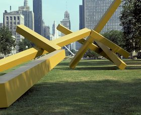

Towering over a hill on the west side of the city, Treemonisha stands over eighty feet tall and is visible from miles around.
00
Quick Facts
81 feet tall
Designed by John Henry
Completed in 2008
Made from steel
01
Pause at a distance
for several moments.
The bright red sculpture is striking against its neutral backdrop where I-55, I-44 and
Truman Parkway all intersect. This is the second permanent sculpture by Henry in Missouri.

Sun Target II, Henry's other permanent sculpture in Missouri. Located at the Springfield Art Museum.
02
What do you think
of when you look at it?
John often chooses a name that has significance to the area in which he is
placing a piece. Treemonisha references the 1910 opera of the same name, which was written by Scott Joplin. Joplin was born in St. Louis and was a major force in American music and theatre.
03
Consider how the piece
relates to its environment.
Like the majority of John's other sculptural work, Treemonisha consists of rigid
geometric forms. However, when together, they arrange into tumbling or sloping compositions that almost mimic the surrounding landscape.